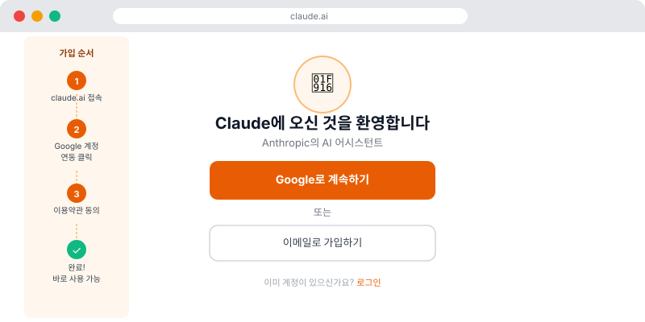
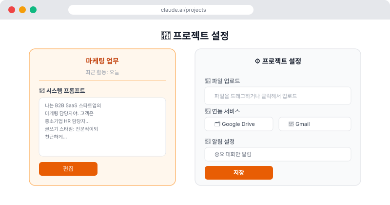

🤖 Claude, 어떻게 시작하나요?
Claude는 Anthropic이 만든 AI 어시스턴트예요. 웹 브라우저에서 바로 쓸 수 있고, 따로 설치할 것도 없습니다. 이 페이지에서는 Claude를 처음 시작하는 방법부터, 업무에 바로 활용할 수 있는 프로젝트 기능까지 알아볼게요.
📱 Step 1. Claude 계정 만들기
- 브라우저에서 claude.ai로 이동
- "Sign up" 클릭 → Google 계정 또는 이메일로 가입
- 무료 플랜으로 시작 가능 (하루 사용량 제한 있음)
- 더 많이 쓰려면 Claude Pro ($20/월) 구독

💡 무료 vs 유료: 무료 플랜도 충분히 체험할 수 있어요. 하지만 업무에 본격적으로 쓰려면 Pro 플랜을 추천해요. 더 긴 문서 처리, 더 많은 대화가 가능해집니다.
💬 Step 2. 첫 대화 시작하기
가입 후 화면 중앙에 입력창이 있어요. 거기에 부탁하고 싶은 내용을 입력하면 됩니다. 앞에서 배운 프롬프트 작성법을 떠올리며 시도해봐요!
지금 바로 따라해보기:
"안녕 Claude! 나는 마케팅 팀에서 일하고 있어.
오늘 신규 프로젝트 킥오프 미팅이 있는데,
팀원들에게 보낼 미팅 안내 이메일 초안을 써줘.
미팅 일시: 내일 오후 2시, 장소: 회의실 A"
"안녕 Claude! 나는 마케팅 팀에서 일하고 있어.
오늘 신규 프로젝트 킥오프 미팅이 있는데,
팀원들에게 보낼 미팅 안내 이메일 초안을 써줘.
미팅 일시: 내일 오후 2시, 장소: 회의실 A"
📁 Step 3. 프로젝트 만들기 — 핵심 기능!
Claude의 가장 강력한 기능 중 하나가 프로젝트예요. 일반 대화는 각각 독립적이지만, 프로젝트는 업무 맥락을 기억하는 나만의 AI 업무 폴더예요.
프로젝트가 왜 좋은가요?
- 맥락 유지: "우리 회사는 B2B SaaS야"라고 한 번만 설정하면 이후 대화에서 계속 기억
- 파일 업로드: 회사 자료, 브랜드 가이드, 이전 보고서를 넣어두면 참고해서 답변
- 일관된 톤: 항상 같은 말투, 같은 형식으로 답하도록 설정 가능
프로젝트 만드는 방법
- 왼쪽 사이드바에서 "Projects" 클릭
- "New project" 버튼 클릭
- 프로젝트 이름 입력 (예: "마케팅 업무", "고객 대응")
- Project instructions(시스템 프롬프트) 작성 — 아래 예시 참고

⚙️ Step 4. 시스템 프롬프트 설정하기
시스템 프롬프트는 "AI에게 미리 알려주는 업무 매뉴얼"이에요. Claude가 항상 이 내용을 기억하고 답변하도록 설정할 수 있어요.
마케팅 담당자용 예시
나는 B2B SaaS 스타트업의 마케팅 담당자야. 우리 회사는 중소기업 대상 HR 솔루션을 제공해.
앞으로의 대화에서:
- 우리 회사 고객은 주로 50~200명 규모 중소기업 HR 담당자야
- 글쓰기 스타일은 전문적이지만 딱딱하지 않게, 친근한 비즈니스 톤으로
- 이메일 제목은 항상 제안해줘
- 결과물 끝에 "이 외에 수정하고 싶은 부분이 있으면 말씀해주세요" 추가
앞으로의 대화에서:
- 우리 회사 고객은 주로 50~200명 규모 중소기업 HR 담당자야
- 글쓰기 스타일은 전문적이지만 딱딱하지 않게, 친근한 비즈니스 톤으로
- 이메일 제목은 항상 제안해줘
- 결과물 끝에 "이 외에 수정하고 싶은 부분이 있으면 말씀해주세요" 추가
고객 대응 담당자용 예시
나는 고객 서비스 팀 담당자야. 우리 제품은 클라우드 기반 회계 소프트웨어야.
고객 문의에 답변할 때:
- 항상 공감 표현으로 시작 (예: "불편을 드려 정말 죄송합니다")
- 해결책을 단계별로 명확하게 안내
- 기술적인 용어는 쉬운 말로 바꿔서 설명
- 답변 끝에 "추가로 궁금한 점이 있으시면 언제든 문의해주세요" 포함
고객 문의에 답변할 때:
- 항상 공감 표현으로 시작 (예: "불편을 드려 정말 죄송합니다")
- 해결책을 단계별로 명확하게 안내
- 기술적인 용어는 쉬운 말로 바꿔서 설명
- 답변 끝에 "추가로 궁금한 점이 있으시면 언제든 문의해주세요" 포함
💡 프로젝트 활용 팁: 업무 유형별로 프로젝트를 나눠보세요. "이메일 작성", "보고서 초안", "고객 대응" 등 각각 맞춤 설정을 해두면 매번 맥락을 설명하지 않아도 돼요.
📎 Step 5. 파일 업로드하기
대화창 하단의 클립 아이콘(📎)을 클릭하면 파일을 업로드할 수 있어요. PDF, Word, Excel, 이미지 등 다양한 형식을 지원해요.
- 활용 예: 긴 계약서 PDF를 업로드하고 "중요 조항과 주의사항을 요약해줘"
- 활용 예: 경쟁사 보고서를 올리고 "우리 회사와 비교해서 우리의 차별점은 뭐야?"
- 활용 예: 엑셀 데이터를 올리고 "이 데이터에서 특이한 패턴이 있으면 알려줘"